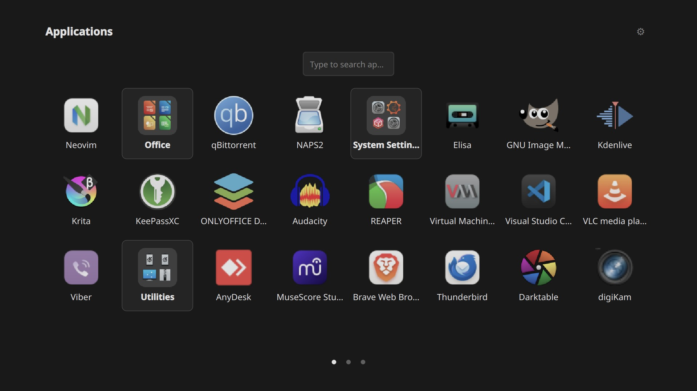
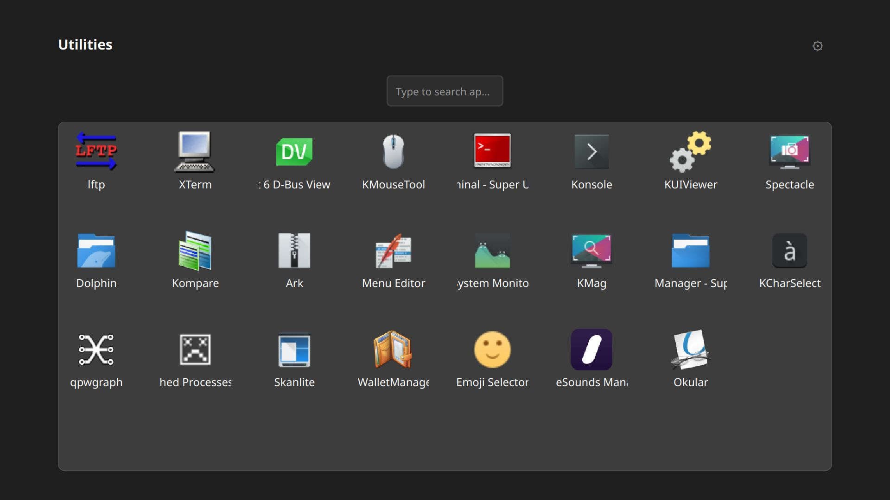
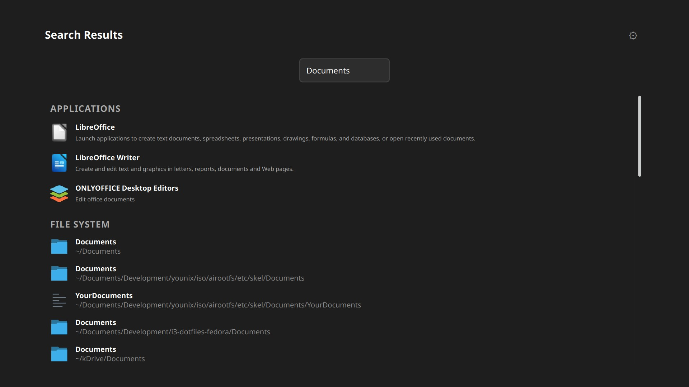
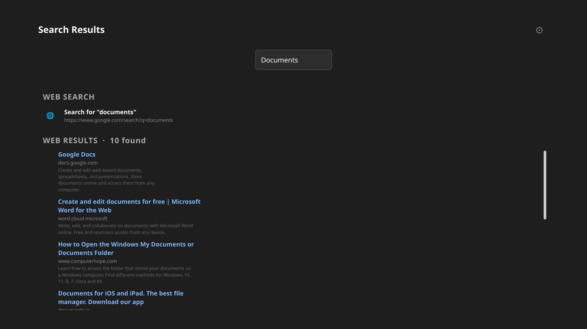
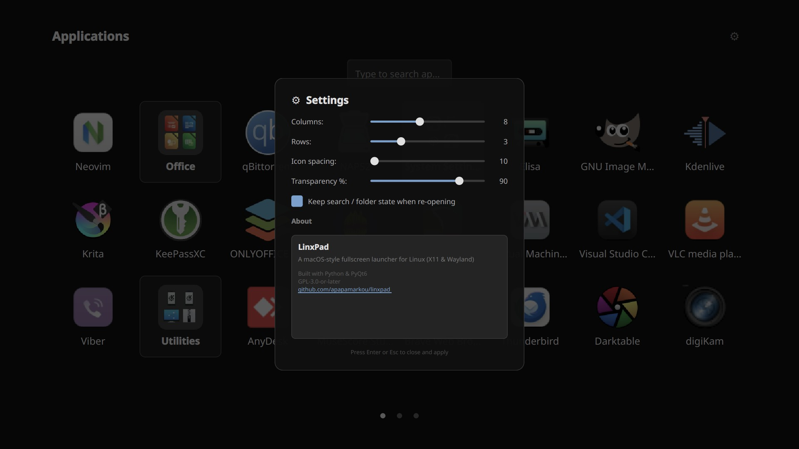

Open Source · X11 & Wayland
LinxPad brings a macOS-style fullscreen app launcher to Linux — fast, elegant, and distraction-free.
Features
A focused launcher built for productivity and aesthetics on any Linux desktop.

Organise your apps into folders and swipe through pages — just like you're used to.

Group related apps into folders with drag-and-drop reordering for a tidy grid.

Start typing anywhere to search apps and folders — results appear instantly.

Search the web directly from the launcher without switching to a browser first.

Tune grid size, font, transparency, and launch mode to match your workflow.
See it in action
A quick walkthrough of LinxPad's features on a real Linux desktop.
Why LinxPad
Works seamlessly on both display server protocols.
Detects new or removed apps automatically
Works in any desktop environment or window manager.
Lightweight, hackable, and easy to extend.
Downloads
Pre-built packages for the most popular distributions, plus a universal AppImage.
All packages are available on the GitHub Releases page.
Support the Project
LinxPad is free and open source. If it makes your Linux desktop a little nicer, consider supporting its development.
☕ Buy me a coffeeYou can also star the repo, share it, or contribute code — every bit helps!
About
LinxPad was born from a simple desire: to have the clean, fullscreen app launcher experience of macOS on a Linux desktop — without compromise.
It reads standard .desktop files, respects your existing app ecosystem, and stays out of your
way until you need it. Press a key, find your app, launch it.
Built with Python and PyQt6, it's lightweight, hackable, and welcomes contributions from the community.